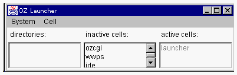
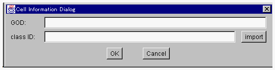
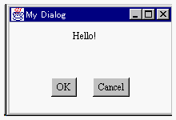

ランチャを利用するグローバルオブジェクトの生成とその活性化
Contents
- グローバルオブジェクトの生成
- アプリケーションの実行

１．グローバルオブジェクトの生成
コンパイルが完了しテスト実行が成功したので、今度は本番でアプリケーション実行してみましょう。
OZではアプリケーションのグローバルオブジェクトを生成しそれを活性化させることで、アプリケーションを実行させます。ランチャが起動されていない場合には、まずランチャを起動してください。
ランチャの起動 
> oz launcher
Logging file F:\oz\logs\dorothy01090.log
|

ランチャの Cell メニューから、new cell を選択すると、「Cell Information
Dialog」が開きます。
GODはグローバルオブジェクトの名前です。ランチャの「inactive cell」、「active
cell」にエントリされていない名前を指定してください。classIDには、動作部クラス識別子を指定します。OKボタンを押下するとグローバルオブジェクトが生成されます。

- ここでは、GODを sample としましょう。そして、class
ID: にTestクラスの動作部クラス識別子JP.go.ipa.oz.user.sample.Test_cl
を入力してください。
ランチャの inactive cell:リストにsampleが追加されていることを確認してください。
２．アプリケーションの実行
OZアプリケーションの実行とは、グローバルオブジェクトの活性化のことです。
ランチャの「inactive cell」のエントリから、いま生成したsampleをダブルクリックしてください。
まずコマンドプロンプトが開き、Helloウィンドウアプリケーションが実行されます。

OKボタンを押すと、このアプリケーションは終了します。
補足：ランチャの終了
ランチャを終了するときには、ランチャの Systemメニューから quit を選択してください。
- アプリケーションの構成
- OZ IDE の起動とプロジェクト、サブジェクトの作成
- Testクラス
- MyDialogクラス
- Quitクラス
- OZ IDE を利用したコンパイルとテスト実行
- アプリケーションのスクールファイル
- ランチャを利用するグローバルオブジェクトの生成とその活性化

- OZプログラムのデバック
- リリースパッケージの配布
(c) 1996-1998 IPA, ETL, AT21, FSIABC, FXIS,
InArc, MRI, NUL, SBC, Sharp, TEC, TIS. All rights reserved.